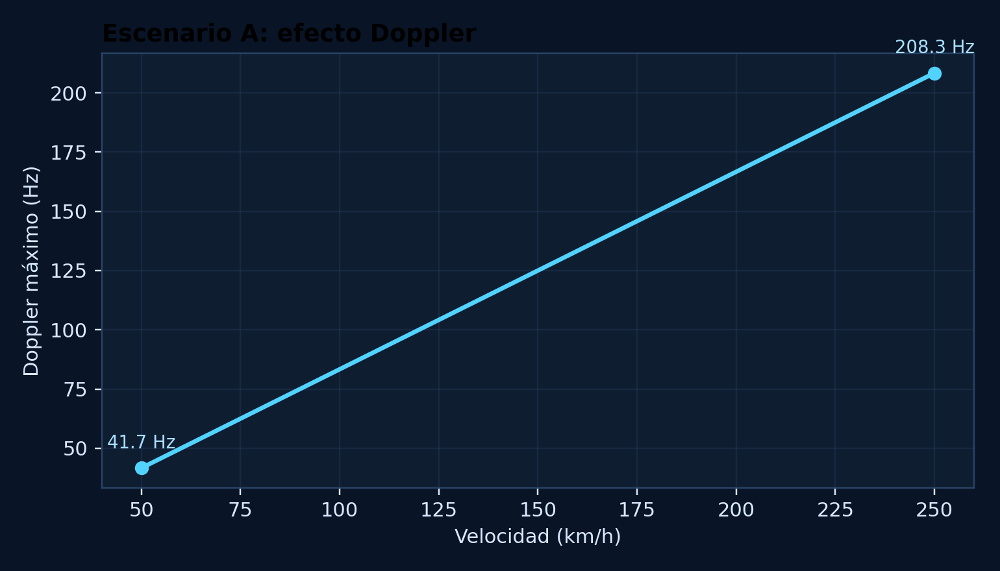
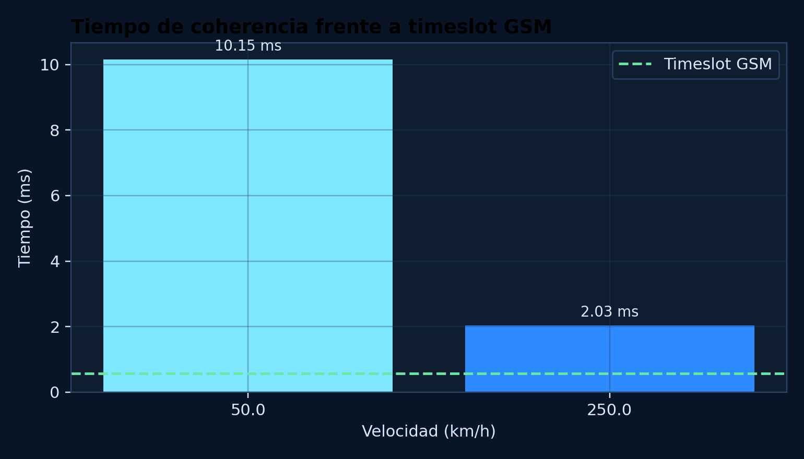
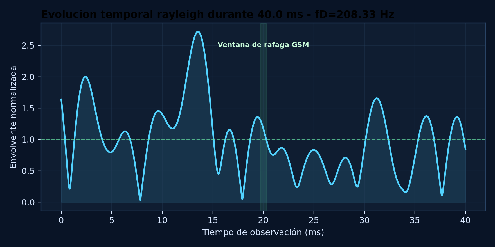
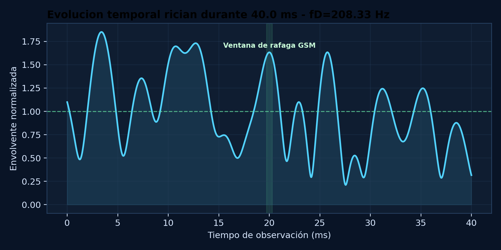
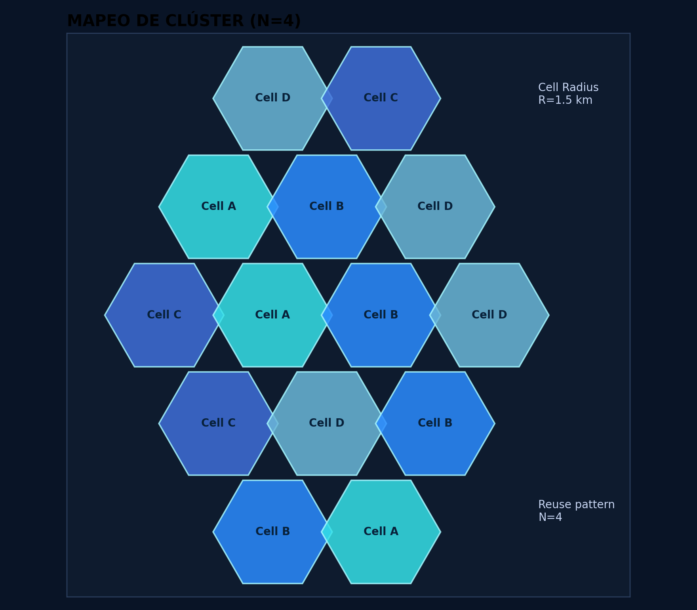
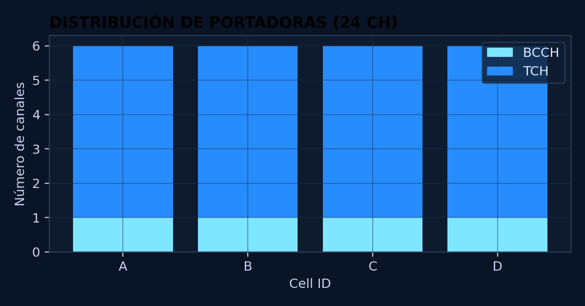
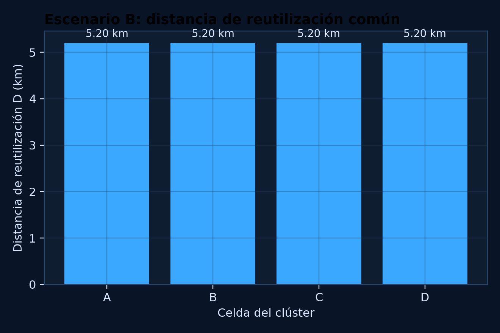
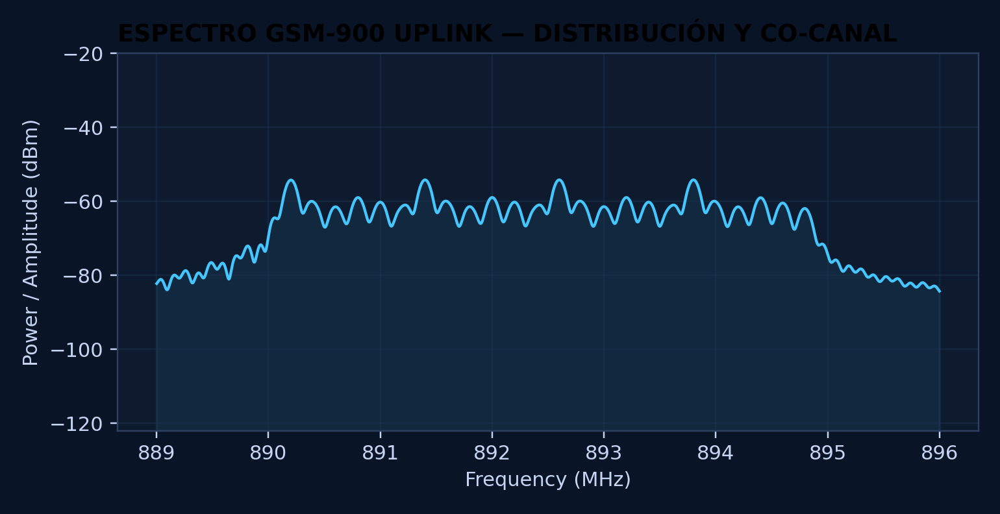
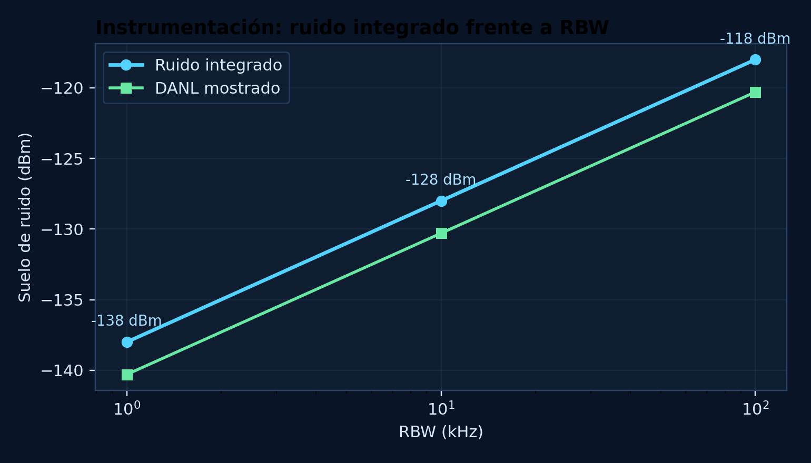

Banda GSM-900 del reto
Esta pagina sintetiza el reto docente Protocolo Titan como si fuera un panel de ingenieria listo para defensa, revision tecnica y publicacion estatica. Integra movilidad extrema, planificacion espectral, reutilizacion celular y criterio instrumental de certificacion en una unica experiencia navegable.
La web es estatica, se puede abrir directamente desde el archivo HTML y tambien queda preparada para publicarse en GitHub Pages sin backend.
Lectura ejecutiva de los resultados mas importantes.
Orientada a memoria seria y presentacion profesional.
Banda GSM-900 del reto
Duracion de la rafaga analizada
Patron de reutilizacion del escenario B
47 circuitos de trafico por celda
Valores clave del despliegue base y mensajes que deben sostener la memoria final.
Analisis de Doppler, tiempo de coherencia y comportamiento del canal durante el timeslot GSM.
Curvas y trazas que sostienen la interpretacion radio del escenario ferroviario.
Relacion directa entre velocidad y desplazamiento Doppler en GSM-900.

Comparativa entre tiempo de coherencia del canal y la ventana util de transmision.

Caso sin componente dominante de linea de vista en la velocidad mas exigente.

Caso con componente LOS dominante para comparar estabilidad de la envolvente.

Comparativa de velocidades, Doppler y estabilidad del canal.
| Velocidad (km/h) | Velocidad (m/s) | Doppler maximo (Hz) | Espectro Doppler (Hz) | Tiempo de coherencia (ms) | Ancho de coherencia (kHz) | Timeslot GSM (ms) | Relacion Tc/Tslot | Doppler normalizado | Selectividad estimada | Lectura ingenieril |
|---|---|---|---|---|---|---|---|---|---|---|
| 50 | 13.889 | 41.667 | 83.333 | 10.152 | 111.111 | 0.577 | 17.594 | 0.024 | transicion plano selectivo | cuasiestatico |
| 250 | 69.444 | 208.333 | 416.667 | 2.03 | 111.111 | 0.577 | 3.519 | 0.12 | transicion plano selectivo | estable con margen reducido |
Metricas de variacion de envolvente para Rayleigh y Rician.
| Velocidad (km/h) | Modelo de fading | Envolvente minima | Envolvente maxima | Desviacion estandar | Pico a pico relativo | LCR a -10 dB (1/s) | AFD media (ms) | Outage (%) | Lectura ingenieril |
|---|---|---|---|---|---|---|---|---|---|
| 50 | rayleigh | 0.075 | 1.993 | 0.575 | 1.918 | 25 | 1.758 | 8.789 | cuasiestatico |
| 50 | rician | 0.196 | 1.753 | 0.388 | 1.557 | 25 | 2.005 | 5.013 | cuasiestatico |
| 250 | rayleigh | 0.03 | 2.721 | 0.557 | 2.691 | 200 | 0.503 | 10.059 | estable con margen reducido |
| 250 | rician | 0.211 | 1.851 | 0.419 | 1.64 | 125 | 0.24 | 3.003 | estable con margen reducido |
Planificacion de ARFCNs, BCCH/TCH, reutilizacion celular y criterio de certificacion.
Visualizaciones para defender la asignacion de canales y el ajuste del analizador.
Mapa del patron celular y de las celdas reutilizadas en el campamento.

Distribucion de portadoras de control y trafico por celda.

Lectura rapida de la distancia D exigida por la reutilizacion celular.

Visualizacion del reparto de ARFCNs y del entorno co-canal en GSM-900.

El estrechamiento de la RBW mejora la visibilidad de senales debiles pero alarga la medida.

Reparto por celda del cluster N=4 y distancia de proteccion.
| Celda | Portadoras/celda | Rango ARFCN | Relacion D/R | Distancia de reutilizacion (km) | C/I estimada (dB) | Margen sobre objetivo (dB) | Circuitos de voz/celda | Bitrate util estimado (kbps) |
|---|---|---|---|---|---|---|---|---|
| A | 6 | 1-6 | 3.464 | 5.196 | 11.644 | 2.644 | 47 | 611 |
| B | 6 | 7-12 | 3.464 | 5.196 | 11.644 | 2.644 | 47 | 611 |
| C | 6 | 13-18 | 3.464 | 5.196 | 11.644 | 2.644 | 47 | 611 |
| D | 6 | 19-24 | 3.464 | 5.196 | 11.644 | 2.644 | 47 | 611 |
Base numerica para explicar el compromiso entre ruido integrado y tiempo de barrido.
| RBW (kHz) | Ruido integrado (dBm) | DANL mostrado (dBm) | Delta vs 100 kHz (dB) | Barrido estimado (ms) | Margen para señal debil (dB) | Interpretacion de medida |
|---|---|---|---|---|---|---|
| 100 | -118 | -120.298 | 0 | 1.25 | 0.298 | RBW ancho: barrido rápido, menor sensibilidad de señales débiles. |
| 10 | -128 | -130.298 | -10 | 125 | 10.298 | RBW estrecho: mejor visibilidad de señales débiles, barrido más lento. |
| 1 | -138 | -140.298 | -20 | 12500 | 20.298 | RBW estrecho: mejor visibilidad de señales débiles, barrido más lento. |
Asignacion de roles BCCH/TCH y politicas de hopping o potencia por portadora.
| Celda | ARFCN | Uplink (MHz) | Downlink (MHz) | Rol de la portadora | Hopping recomendado | TS utiles | Politica de potencia |
|---|---|---|---|---|---|---|---|
| A | 1 | 890.2 | 935.2 | BCCH/CCCH control | No | 7 | fixed/stable |
| A | 2 | 890.4 | 935.4 | TCH traffic | Si | 8 | adaptive if supported |
| A | 3 | 890.6 | 935.6 | TCH traffic | Si | 8 | adaptive if supported |
| A | 4 | 890.8 | 935.8 | TCH traffic | Si | 8 | adaptive if supported |
| A | 5 | 891 | 936 | TCH traffic | Si | 8 | adaptive if supported |
| A | 6 | 891.2 | 936.2 | TCH traffic | Si | 8 | adaptive if supported |
| B | 7 | 891.4 | 936.4 | BCCH/CCCH control | No | 7 | fixed/stable |
| B | 8 | 891.6 | 936.6 | TCH traffic | Si | 8 | adaptive if supported |
| B | 9 | 891.8 | 936.8 | TCH traffic | Si | 8 | adaptive if supported |
| B | 10 | 892 | 937 | TCH traffic | Si | 8 | adaptive if supported |
| B | 11 | 892.2 | 937.2 | TCH traffic | Si | 8 | adaptive if supported |
| B | 12 | 892.4 | 937.4 | TCH traffic | Si | 8 | adaptive if supported |
| C | 13 | 892.6 | 937.6 | BCCH/CCCH control | No | 7 | fixed/stable |
| C | 14 | 892.8 | 937.8 | TCH traffic | Si | 8 | adaptive if supported |
| C | 15 | 893 | 938 | TCH traffic | Si | 8 | adaptive if supported |
| C | 16 | 893.2 | 938.2 | TCH traffic | Si | 8 | adaptive if supported |
| C | 17 | 893.4 | 938.4 | TCH traffic | Si | 8 | adaptive if supported |
| C | 18 | 893.6 | 938.6 | TCH traffic | Si | 8 | adaptive if supported |
| D | 19 | 893.8 | 938.8 | BCCH/CCCH control | No | 7 | fixed/stable |
| D | 20 | 894 | 939 | TCH traffic | Si | 8 | adaptive if supported |
| D | 21 | 894.2 | 939.2 | TCH traffic | Si | 8 | adaptive if supported |
| D | 22 | 894.4 | 939.4 | TCH traffic | Si | 8 | adaptive if supported |
| D | 23 | 894.6 | 939.6 | TCH traffic | Si | 8 | adaptive if supported |
| D | 24 | 894.8 | 939.8 | TCH traffic | Si | 8 | adaptive if supported |
Puntos que conviene dejar expresos en la memoria tecnica final.
| Area de control | Evidencia | Argumento que debe aparecer en la memoria |
|---|---|---|
| Uso eficiente del espectro | planificación ARFCN, clúster N=4, distancia de reutilización y control de co-canal | Justificar que la asignación espectral reduce interferencias y evita solapamientos. |
| Emisiones no deseadas | medida con analizador de espectro y ajuste de RBW | Explicar cómo se distinguirían señales débiles de ruido instrumental. |
| Estabilidad de canal | Doppler, tiempo de coherencia y comparación con timeslot GSM | Defender si el enlace es viable durante la ráfaga en movilidad. |
| Documentación técnica | tablas, gráficas, hipótesis y trazabilidad de cálculos | Incluir ecuaciones, unidades y discusión ingenieril. |
Paquete limpio con la pagina HTML y el codigo Python necesario para recalcularla.
index.html o docs/index.html para ver la web.src/protocolo_titan/.requirements.txt.python -m protocolo_titan.main con PYTHONPATH=src.tests/ contiene pruebas para validar los calculos.